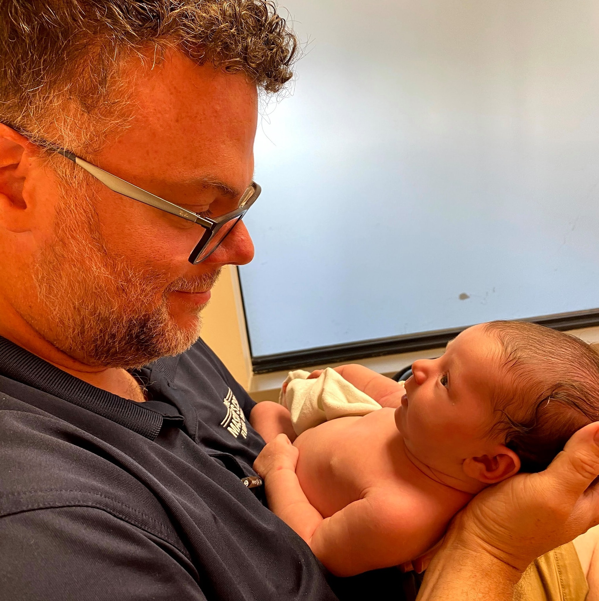

Intro
Who I am
Hello! Nice to meet you. I'm Paul Reynolds, a man of several past careers who is finally finding
his way home to working in technology. I've trained in classical music and Christian ministry
and worked as a pastor for 3 years. I'm currently in wood floor supply sales, but now that I'm a
family man, the time to pursue a career that aligns with my passions is shorter than ever.
The cute little chick here is my baby (obviously) daughter Olive.
Where I am
I currently live in St. Louis, MO. I'm a St. Louis native, though I've lived a total of 13
years in the Kansas City area. If you'll reference a map, you'll see I don't do middles of states.
About me
Why I'm learning development
20 years ago, I learned how to make a basic website in HTML 3. As you can imagine,
the Internet has changed a whole lot! Though I never pursued web development as a
serious course of study, I never lost my passion for electronics and Internet life. My life has
taken me down a number of very collaborative paths like orchestral music performance and
church & campus ministry. Even though I'm comfortable in an academic environment, my natural
environment is talking through ideas with friends. I'm very excited about joining collaborative
computer programming environments!
Interests
You might guess that my interests still include classical music and church involvement,
but I am also an avid reader and book collector. I continue to teach in my church environment though not
for a living anymore. Though it's difficult to remember hobbies now that I have a 6 month old daughter who's
rolling and grabbing everywhere she can! My wonderful wife Elizabeth is a mental health counselor though she's
currently working in the insurance field, also outside of her passions. Practical jobs unrelated to passions run
in the chosen family for now. When I'm not reading up on data technology and philosophy and culture, I love to:
- Watch films (favorite creators include David Lynch and Stanley Kubrick)
- Ride my bike around St. Louis
- Cook exciting new things
- Spend as much time around people as I can